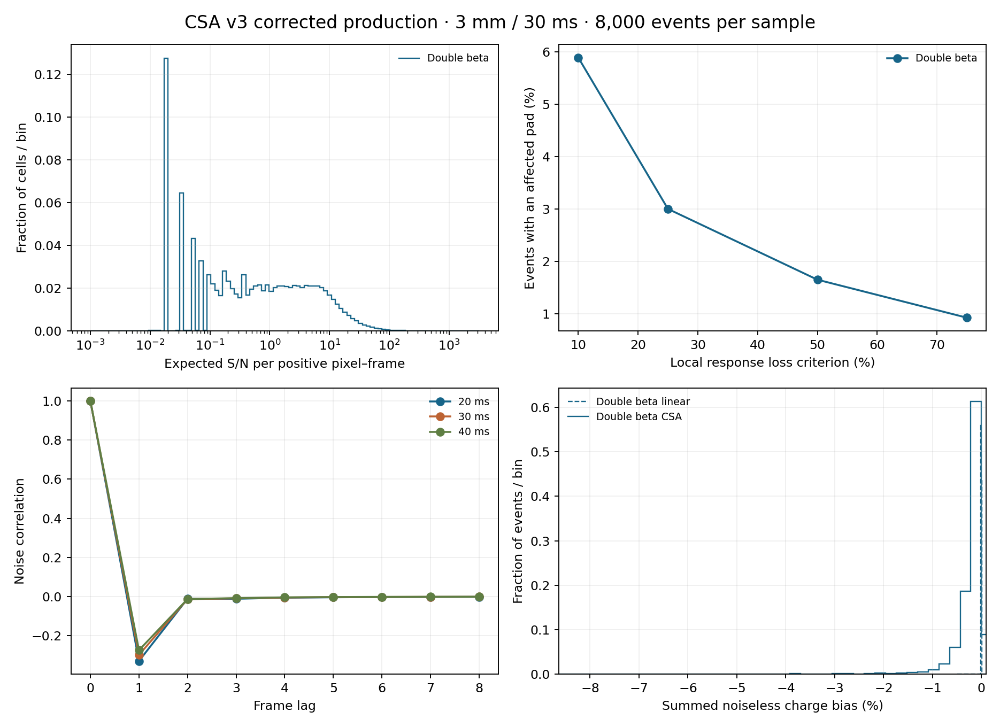

This production contains 8,000 bb0nu events at 3 mm pitch and 30 ms frames. The shared realization places ion drift uniformly between 5 and 145 cm, with complementary electron drift in the 150 cm chamber. Every event ID, primary-pair checksum and drift distance was checked against the existing matched common realization and 4 mm ion file. The electron readout was preserved. All events and signed response buckets are retained. The ion ledger is 897,306,359, exactly equal to the primary-pair total. The CSA used 15,178 nonlinear histories and 6 SPICE fallback histories among 1,118,323 pad histories. Production creates no SPICE control histories. Fresh filtered outputs were asserted before the run; actual circuit-deck, model, kernel-waveform and calibration checksums are saved in preflight.toml. Julia sendfile reported an error after producing a byte-identical publication copy. The saved copy was verified by SHA256, its production metadata completed and its event ledgers validated before registration. Numerical timing covers the completed fresh calculation; recovery and registration are timed separately.
| Stage | Seconds |
|---|---|
| Ion diffusion and collection | 39.4565 |
| Covariance calibration setup | 45.9391 |
| Linear predictions and current preparation | 90.9843 |
| Nonlinear response and storage | 61.7863 |
| SPICE fallback workflow | 227.6810 |
| Three-frame reconstruction and summary | 145.9292 |
| Figures and presentation | 0.9305 |
| Event work excluding calibration and final presentation | 526.4824 |
| Event work per event | 0.0658 |
| Publication recovery and registration | 138.1008 |
PDF report · Interactive response diagnostics
